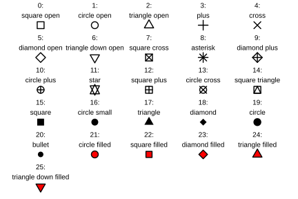

18 Plots of the raw data
Now let’s look at some plots of the raw data.
You can use the template below (you will need to change the data frame and variable names).
These graphs use the function geom_point() to add a layer of points at x-y coordinates (e.g. an x-y scatter plot).
- The
alpha = 0.1argument controls the transparency of the point, where 0 is completely transparent and 1 is completely opaque. When you have lots of data points, making the points transparent can help you see where there are lots of points vs. just a few. - The
shape = 16argument changes the shape according to the options shown below (I think the close, small circle works better for this many points, but you can try some different shapes and see for yourself). - You can also change the size with a
size = xargument if you’d like.

myfig <- mydf |>
ggplot(aes(x = my_x_var, y = my_y_var)) +
geom_point(alpha = 0.1, shape = 16) +
theme_bw()
print(myfig)Warning!
Be careful where you put the arguments alpha and shape. If you’re not careful and end up putting them in an aes() call, you could run into problems.
Best case scenario your code will throw an error.
Worst case it is actually valid and you don’t notice that it’s not what you wanted.
Make five plots showing:
- power vs. datetime (this is important to look for gaps and make sure we have good data coverage over the year)
- power vs. wind speed
- power vs. rotor speed
- power vs. nacelle position
- wind speed vs. nacelle position
Warning!
You’ll want to think carefully about which variable goes on the x-axis and which variable goes on the y-axis.
Generally speaking you want the x-variable to be the thing causing a change in the y-variable.
18.1 Adding trendlines with ggplot()
For x-y scatter plots, you may want to add a trendline.
With ggplot(), the way to do it is by adding a layer to your plot with the geom_smooth() function.
Tip!
The order in which you add your layers matters!
You probably want to add your geom_smooth() layer after your geom_point() layer, so it will be on top of the points instead of underneath them.
There are two main automated methods that geom_smooth() can use for the trendline. (You can also give it your own formula, but we won’t cover that in this module.)
- a linear trendline:
geom_smooth(method = "lm") - a gam trendline:
geom_smooth(method = "gam")
The latter method is a way to fit a smooth curve to data. (The specific math is way beyond the scope of this module - we’ll just be looking at both of them visually.)
Note: There is also a third method, called “loess”. This is another way to fit a smooth curve to data, however it can fall down on large datasets. As such we won’t be using that here.
Add a trendline to each of yours plots, and experiment to see which method of trendline appears to fit the data best.
Question: Which method of trendline appears to work best for each plot?
We’re now at the point where you can answer questions 1 & 2!
Research Questions:
- In 2025, What was the relationship between the amount of power generated and:
- wind speed?
- rotor speed?
- nacelle position?
- In 2025, did certain directions tend to have stronger winds that were better at generating power than others?
3. In 2025, did certain months have faster winds that were better at generating power than others?